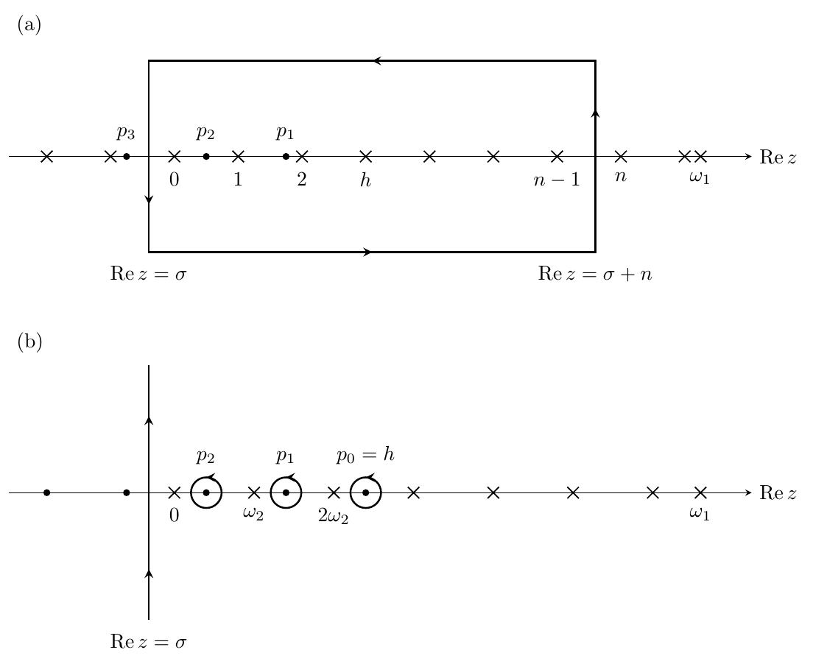

Cyclic Haagerup-Izumi fusion categories at every odd order
Cyclic Haagerup–Izumi fusion rings (2n basis elements, G=Z/nZ) were known to be categorified only in limited cases. It was open whether a spherical fusion category with these fusion rules exists for every odd n>=3.
Explicit real coefficients are built from samples of the hyperbolic gamma function and their finite Fourier transforms. Quadratic identities follow from reflection and convolution inverses; a four-term contour identity makes a range of cubic Fourier coefficients vanish, and the remaining cubics and quartics are completed algebraically. Evans–Gannon reconstruction then yields the category, and a dimension-field embedding change gives positive dimensions. A Lean 4 development using Mathlib constructs the hyperbolic gamma function at the prescribed periods and verifies the linear, quadratic, cubic, and quartic coefficient identities.

For every odd n>=3, a complex spherical fusion category with cyclic Haagerup–Izumi fusion rules is constructed, plus a pseudo-unitary categorification, giving infinitely many inequivalent categories of each kind. The Lean theorem EGEquations_ruijsenaars verifies the reconstruction equations for the explicit coefficients without assumed special-function identities.